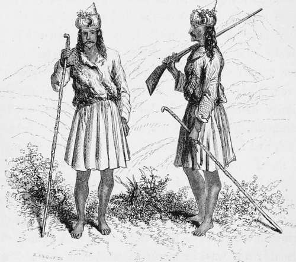

Chapter V. Part 2
Description
This section is from the book "Hog Hunting In The East, And Other Sports", by J. T. Newall. Also available from Amazon: Hog Hunting in the East, and Other Sports.
Chapter V. Part 2
No squeaker is nigh, To grow such fine tushes
Or cock such an eye.
" You not leave thee, then, lone one, Life's hazards to stem; Since thy wives are all sleeping, Go, sleep thou with them.
Thus, kindly, I spear thee, To the dust bring thy head,
For the mates of thy boarhood Are speared and are dead.
" Ah! soon may I follow,
"When hunters decay, And the family circles
Of pig die away ; When sows are all speared,
And squeakers are flown, Oh ! who would inhabit
The jungles alone ? "
This was received with much applause. Indeed, old Natta was astonished at the uproar, as he sat gnawing away at a piece of juicy pork. When this had subsided, and Smart was congratulated and elevated to the situation of Poet Laureate to the hunt, Mackenzie spoke.
"Anecdotes and songs and conversation about pig are delightful and most interesting ; but a little occa-sional change in our anecdotal diet might not be altogether disagreeable, perhaps. The tonjours perdrix palls at last, you know. Here we have been hunting pig, eating pig, thinking pig, talking pig, singing pig, and, I verily believe, dreaming pig. Couldn't some one manage to break the monotony of the subject. You, Melton, give us a Himalayan experience for a change.
" Very good," was the reply. " Let me see—I'll tell you of an affair I had with a bear once. I have often been charged home, but this was decidedly the closest shave I ever had of being boned.
" Ah, you poor ducks,"' how I pity you ! I daresay you think your Mahableshwar and your petty hills of four thousand or five thousand feet or so, ' some,' as the Yankees say. But ah! you should see the glories of the Himalayas, beside which your Ghauts are but molehills.
" It was in the middle of the monsoon, towards the end of July, a season at which it is not usual to travel in those mountain districts which feel its influence. But I was up there on leave, and obliged to take advantage of my opportunity, and disregard the greater danger attending hill-climbinff when the higher snow is breaking and broken up, the torrents in full force, and the mountains saturated with moisture.
" I had been staying at Hooshiarpore, and thence paid a visit to the pretty small hill-station of Dhurm-sala, near Kangra. This was my starting-point for the mountain trip; and, on the 28th July, I crossed the Indran pass, with the object of penetrating the rarely-visited Burnaor district, whence spring the sources of the Bavee, there called Bewa.
" After staying in a cave for two or three days at the foot of the pass, but high above the region of trees, detained there by the incessant rain, I took a favourable opportunity and made good the ascent. I had with me perhaps about a dozen mountain-men belonging to a tribe of hill Rajpoots, called Guddees,* —for of course everything I had was obliged to be carried by cooleys, the path being utterly impracticable for any beast of burden.
* A name by "which. Bombay officers are distinguished in contradistinction to Bengallese, usually called " Qui-hys."
Guddees. A Tribe Of Ii Ill-Men, Inhabiting Burn A Or, In The Himalayas.
" A very active, good-looking and interesting race they are in general, and the women are very pretty, with, oh ! such legs and ancles. These are liberally displayed by the dress worn by both sexes a sort of long, loose tunic, of woollen manufacture, gathered in at the waist, and descending to the knee or lower, at the option of the wearer. It is allowed to hang over the waist-girdle in baggy folds, in which they carry various marching necessaries. But if deemed desirable, these folds can be dispensed with, and the garment elongated so as to cover more of the legs. . Free and facile play of the limbs is, however, necessary in that mountain-climbing. The men are jolly, lively fellows enough, but somewhat dirty, and of no account as shikarees. More than the body-garment, even, their head-dress is distinguished for its peculiarity of shape, being also made of some woollen stuff, which is so arranged as to form a peak behind, such as I have never seen elsewhere. They the men, I mean wear their hair, too, in three or four long uncut locks on each side, and pride themselves on the length of these tresses, just as English ladies would do.
* See Appendix N, Note E.
"I had a most difficult journey altogether; for the snow in the clefts of the mountains, which formed the usual road, was in many parts broken up, and we were obliged to find our way by the sides of the ravines, very often with but a bare footing, step after step being made with the greatest caution. In several instances we had to ascend the bare face of sloping rocks, in some parts precipitous.
" Sometimes a pine stem, felled on the brink, was the only bridge over a roaring torrent; at other places, a couple of long poles would be laid across, parallel to each other, and on these loose slabs of wood be placed crossways, with many and extensive intervals, through which the water might be seen foaming and flashing far below. Over the Ravee itself, in what I may, for distinctions sake, call the more civilized portion of the valley, rope bridges were to be found.
" I soon found it was impossible to get on with my shoes, so I procured a pair of foot-coverings made of twisted goat's-hair, the roughness of which, when bound on, gave a fine biting grip, and at the same time allowed easy play to the foot. The men used a sort of sandal, formed of twisted straw, which they constructed in a few minutes and threw away when worn out and the day's journey was over.
" I had with me a small rowtie, though I lived a good deal in caves in the upper parts of the mountains, and the rest of my kit was reduced to the most extreme limits : a pewter mug, cup and saucer, two or three plates, and a knife, fork, and spoon, may seem to some an unnecessarily limited supply of table necessaries ; but roughing it was essential on that trip, and I have always found ' that the less you have, the less you want.'
Continue to:
- prev: Chapter V
- Table of Contents
- next: Chapter V. Part 3